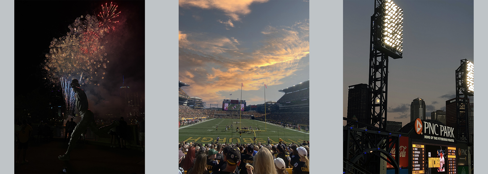
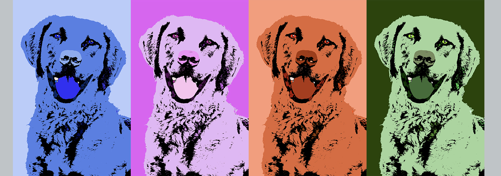
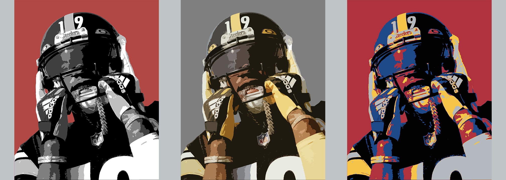
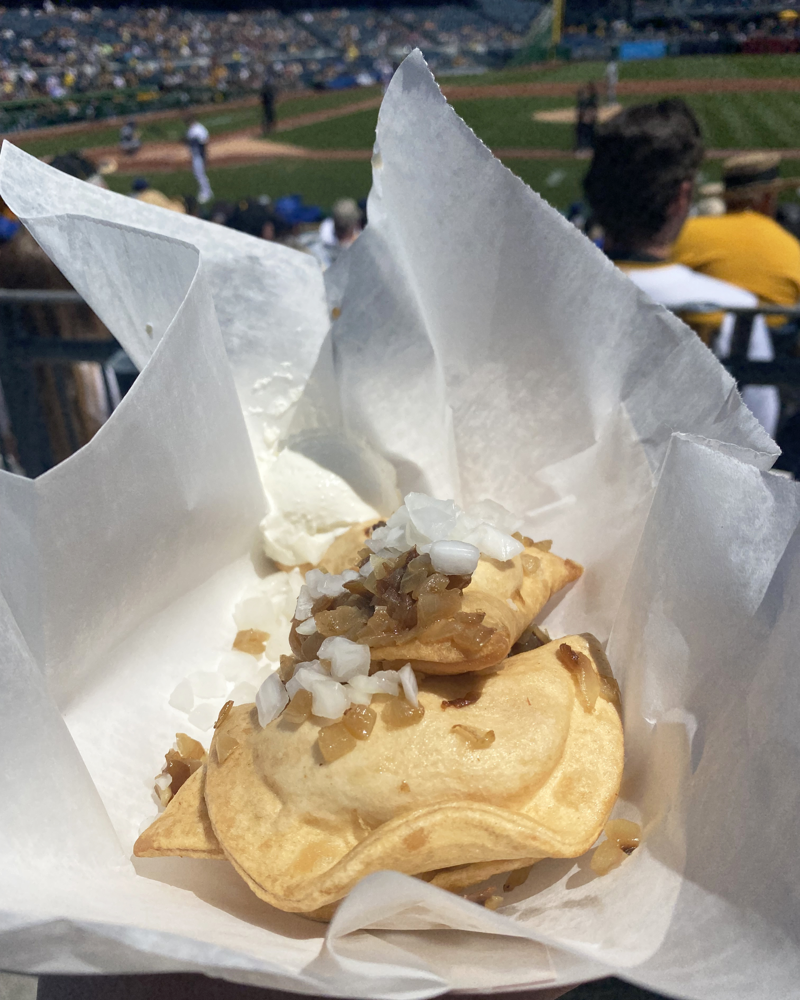
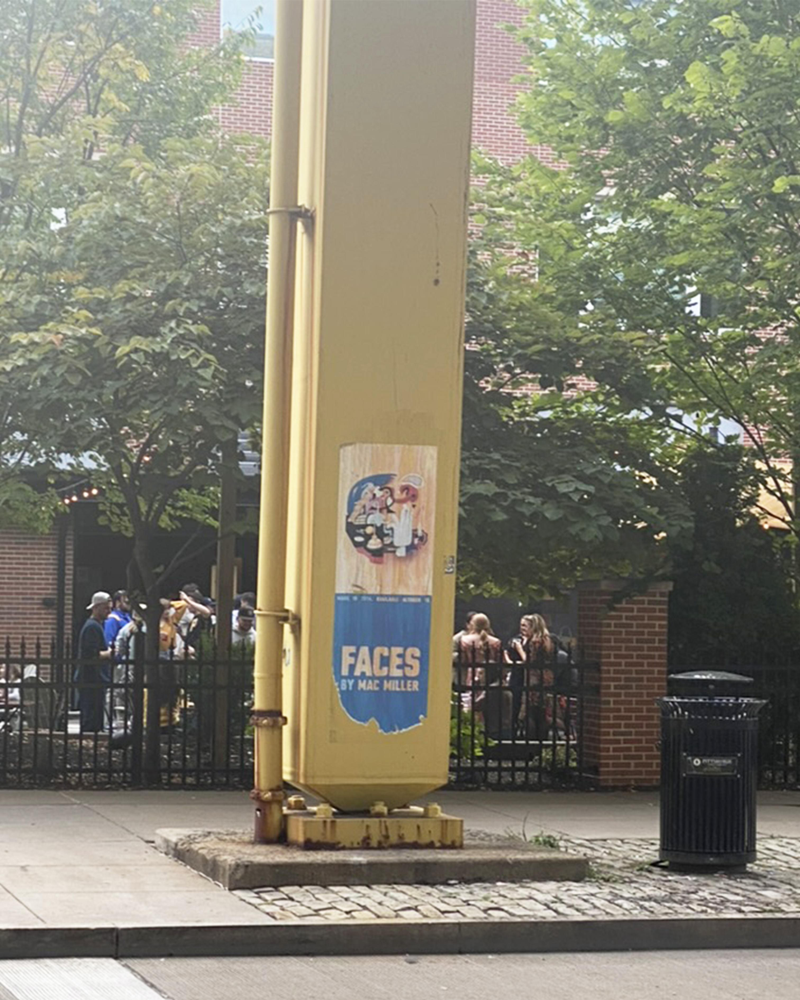
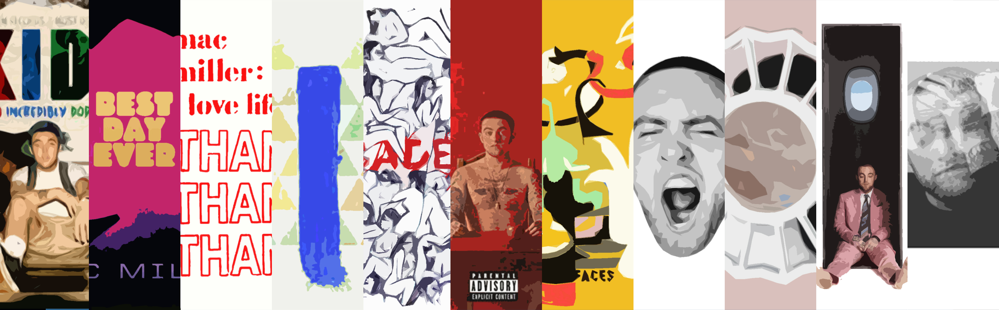
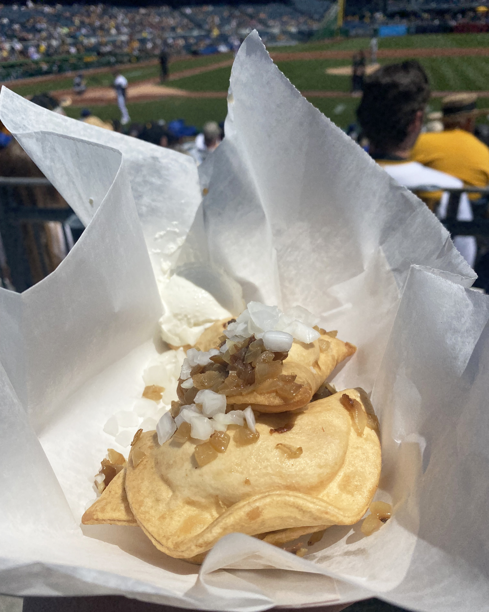
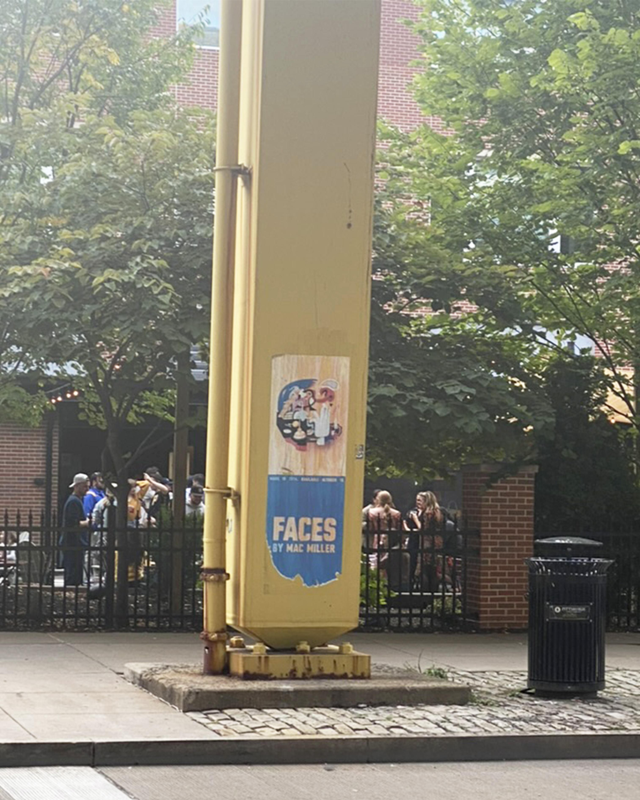
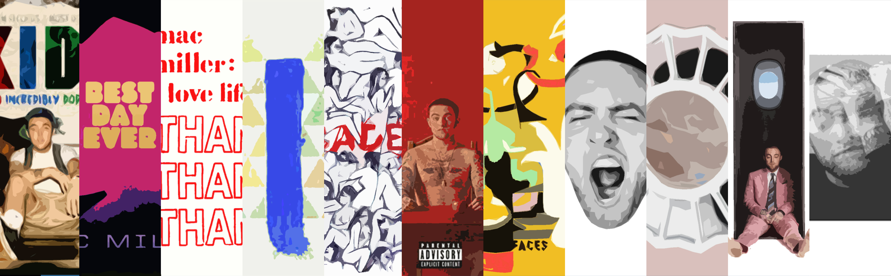

An Introduction to Carlin Carion
Hello and welcome to my site! My name is Carlin Carion. I am from the North Hills of Pittsburgh and spend a lot of my time messing around with Photoshop, attending sporting events, playing golf, reading, and taking photographs. I am a junior at the University of Pittsburgh pursuing a bachelor's degree in media and professional communications on the digital media track, in addition to receiving a certificate in sport studies. Being from Pittsburgh, I am a huge sports fan, especially when it comes to baseball, hockey, and football. That being said, my love of sports has developed from a childhood spent attending/watching Pittsburgh (and sometimes Los Angeles/New York) sports teams. It has only grown over the years, and I hope to one day work in the sports industry in their media department. Coming from a family of photographers, I began dabbling with digital media at a young age. At first, I just messed around by taking photographs and using Adobe Photoshop and Lightroom to edit them; it was not until I took a graphic design class in high school that I discovered my interest in creating digital art.
🌳 Twine Game 🌳
This Twine game encourages users to look into whether or not their lifestyle is sustainable and urges them to live more sustainable lifestyles. The user will view a character's lifestyle as a way to reflect on their own. The choices the user is given will help the user come to their own conclusions about how to live sustainably. The game is educational but not so educational that the user would get bored or confused with the information being provided, which is why there is a character included in the game to help guide the user's attention. Click the link below to try it out and test your sustainability knowledge!
Link to Twine Game
Digital Media
Photography was my original gateway to creating digital media. From a young age, I would take my mom’s camera and take photos of my pets or random objects around the house. In middle school, I got my first camera for Christmas and spent the majority of the rest of winter break taking photographs. I combined my love of sports with my interest in taking photographs. At first, I would just photograph my sister's or cousins' baseball games around the little league field, but in recent years, I began to capture images at Pittsburgh sporting events.

My passion for graphic design and digital media began to grow during my sophomore year of high school when I took a basic graphic design class. One of our first assignments was to create our own version of Andy Warhol’s pop art using a single color. At first, I struggled with understanding the various components of Photoshop beyond just editing photographs, but I eventually got the hang of it, and since then, I have taken more and more classes to help me expand my abilities.

As I began to develop more skills involving Photoshop, I began to create digital artwork of my favorite players/teams. In the beginning, the work I created was just for myself, but I began creating more for my family and friends and their interests. A majority of the posters in my sister’s room are posters I created, many of them sports or Pittsburgh related. A few of the posters I create are not created using my own images; one of my favorite photographers is Mike Spinos due to his ability to capture unique personal shots of players.

Favorite Pittsburgh Things
 City of Champyinz: Growing up in the Pittsburgh area, there are a lot of things about Pittsburgh that I love; Pittsburgh sports are top of the list. My early years were met with dominant teams on all fronts, with the Penguins winning the 09’ Stanley Cup Finals, the Steelers winning the Super Bowl in 06’ and 09’, and the Pirates making it to Buctober in 2013, ending a 21-year playoff drought. On top of that, the University of Pittsburgh's men’s basketball team made five sweet sixteen appearances in the early 2000s, creating a city of champions once again. Pittsburgh's success in sports in the early 2000s has led me and others my age to become invested fans of these teams, especially the Pirates,that have carried on throughout my life, making the ballpark one of my favorite places to be.

Food: As I previously mentioned, the ballpark is one of my favorite places to be, not only for the sports atmosphere but also for the food. Pittsburgh-inspired foods are one of my favorites. Whether it be fries on a sandwich at Primantis or pierogies at PNC Park, food in Pittsburgh always hits. In no way would I consider myself a morning person, but I will wake up early on the weekends in order to get a seat at Pamela’s Diner or make the bus ride across the Monongahela to get Benny Fierro's pizza. Maybe it’s because I grew up around it, but Pittsburgh food is top-tier.

Yinz: One of my favorite things about Pittsburgh is how proud Pittsburghers are to represent their city. One of my favorite musical artists is the late Mac Miller. Mac Miller embodies what it means to be from Pittsburgh; he was an avid Pittsburgh sports fan, insisted that fries belong on sandwiches, and wrote a countless number of songs inspired by Pittsburgh, including a whole studio album titled Blue Slide Park. That being said, I do not think anyone represents what the city of Pittsburgh is about quitelike Mister Rogers. Despite Mister Rogers’ Neighborhood ending a few years prior, my childhood consists of many hours watching Mister Rogers and his sweater. Kids today get to experience a similar experience with Mister Rogers’ Neighborhood getting carried out through Daniel Tiger’s Neighborhood.

City of Champyinz: Growing up in the Pittsburgh area, there are a lot of things about Pittsburgh that I love; Pittsburgh sports are top of the list. My early years were met with dominant teams on all fronts, with the Penguins winning the 09’ Stanley Cup Finals, the Steelers winning the Super Bowl in 06’ and 09’, and the Pirates making it to Buctober in 2013, ending a 21-year playoff drought. On top of that, the University of Pittsburgh's men’s basketball team made five sweet sixteen appearances in the early 2000s, creating a city of champions once again. Pittsburgh's success in sports in the early 2000s has led me and others my age to become invested fans of these teams, especially the Pirates,that have carried on throughout my life, making the ballpark one of my favorite places to be.

Food: As I previously mentioned, the ballpark is one of my favorite places to be, not only for the sports atmosphere but also for the food. Pittsburgh-inspired foods are one of my favorites. Whether it be fries on a sandwich at Primantis or pierogies at PNC Park, food in Pittsburgh always hits. In no way would I consider myself a morning person, but I will wake up early on the weekends in order to get a seat at Pamela’s Diner or make the bus ride across the Monongahela to get Benny Fierro's pizza. Maybe it’s because I grew up around it, but Pittsburgh food is top-tier.

Yinz: One of my favorite things about Pittsburgh is how proud Pittsburghers are to represent their city. One of my favorite musical artists is the late Mac Miller. Mac Miller embodies what it means to be from Pittsburgh; he was an avid Pittsburgh sports fan, insisted that fries belong on sandwiches, and wrote a countless number of songs inspired by Pittsburgh, including a whole studio album titled Blue Slide Park. That being said, I do not think anyone represents what the city of Pittsburgh is about quitelike Mister Rogers. Despite Mister Rogers’ Neighborhood ending a few years prior, my childhood consists of many hours watching Mister Rogers and his sweater. Kids today get to experience a similar experience with Mister Rogers’ Neighborhood getting carried out through Daniel Tiger’s Neighborhood.
